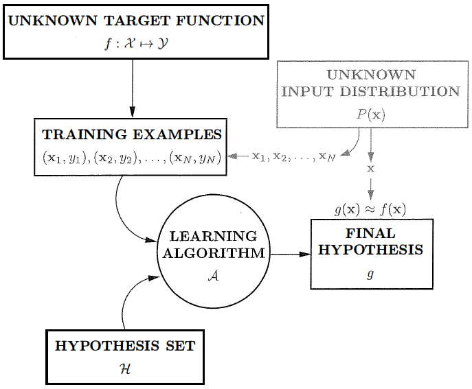
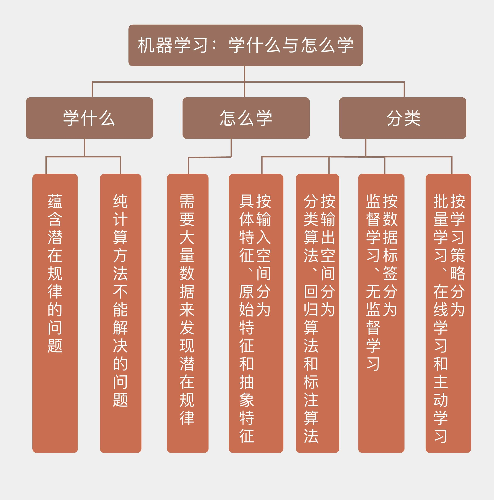

- 00 开篇词 打通修炼机器学习的任督二脉.md.html
- 01 频率视角下的机器学习.md.html
- 02 贝叶斯视角下的机器学习.md.html
- 03 学什么与怎么学.md.html
- 04 计算学习理论.md.html
- 05 模型的分类方式.md.html
- 06 模型的设计准则.md.html
- 07 模型的验证方法.md.html
- 08 模型的评估指标.md.html
- 09 实验设计.md.html
- 10 特征预处理.md.html
- 11 基础线性回归：一元与多元.md.html
- 12 正则化处理：收缩方法与边际化.md.html
- 13 线性降维：主成分的使用.md.html
- 14 非线性降维：流形学习.md.html
- 15 从回归到分类：联系函数与降维.md.html
- 16 建模非正态分布：广义线性模型.md.html
- 17 几何角度看分类：支持向量机.md.html
- 18 从全局到局部：核技巧.md.html
- 19 非参数化的局部模型：K近邻.md.html
- 20 基于距离的学习：聚类与度量学习.md.html
- 21 基函数扩展：属性的非线性化.md.html
- 22 自适应的基函数：神经网络.md.html
- 23 层次化的神经网络：深度学习.md.html
- 24 深度编解码：表示学习.md.html
- 25 基于特征的区域划分：树模型.md.html
- 26 集成化处理：Boosting与Bagging.md.html
- 27 万能模型：梯度提升与随机森林.md.html
- 28 最简单的概率图：朴素贝叶斯.md.html
- 29 有向图模型：贝叶斯网络.md.html
- 30 无向图模型：马尔可夫随机场.md.html
- 31 建模连续分布：高斯网络.md.html
- 32 从有限到无限：高斯过程.md.html
- 33 序列化建模：隐马尔可夫模型.md.html
- 34 连续序列化模型：线性动态系统.md.html
- 35 精确推断：变量消除及其拓展.md.html
- 36 确定近似推断：变分贝叶斯.md.html
- 37 随机近似推断：MCMC.md.html
- 38 完备数据下的参数学习：有向图与无向图.md.html
- 39 隐变量下的参数学习：EM方法与混合模型.md.html
- 40 结构学习：基于约束与基于评分.md.html
- 如何成为机器学习工程师？.md.html
- 总结课 机器学习的模型体系.md.html
- 总结课 贝叶斯学习的模型体系.md.html
- 结课 终有一天，你将为今天的付出骄傲.md.html
- 捐赠
03 学什么与怎么学
男孩还是女孩？这是个问题！
在中国人的生活中，生男生女可谓兹事体大，多少幸福与烦恼都因此而起。那么有没有办法提前做出准确的预测呢？当然有啦！通常在怀孕4个月时，胎儿的性别就可以通过B超得到准确的判断了，所以只要问一问医生轻松搞定。但是出于职业道德和执业法规的要求，医生一般是不会透露胎儿性别的。想要在怀孕的早期判断，终归还是要依赖祖辈流传下来的经验。
可祖辈的经验多了去了，流传最广的可能就是“酸儿辣女”：如果准妈妈突然爱喝柠檬水说明怀了个男孩；突然爱吃老干妈就说明怀了个女孩。可实际上，“酸儿辣女”只是一种互文的说法，表达的是怀孕对饮食口味的影响，想要以此为据预测胎儿的性别纯属无稽之谈。相比之下，另一条经验还更靠谱一些：准妈妈的肚子如果是尖形，则胎儿很可能是个男孩；肚子是圆形的话就更可能是个女孩。至少在我个人的生活经验之中，这条规则的准确率超过了80%。
剥去所有的伦理道德外延，所谓的“生男生女”完全可以看成一个纯粹的科学问题。虽然说胎儿性别不可能以决定性的方式影响母体的物理特征，但终究会有一定的参考价值。通俗说就是虽说男孩肚子尖女孩肚子圆一定不会以100%的概率发生，但70%的置信度恐怕还是有的，这相比于纯属瞎猜的对半概率就是个不小的进步，也就意味着肚子形状的特征提供了一定的信息。除此之外，胎儿性别还可能对母体的其他变化产生一些不起眼但确实存在的影响，比如说民间流传的脚部浮肿或者肚脐突出，这些变化都可以作为预测胎儿性别的特征来看待。
除了肉眼可见的物理特征外，更精确的特征是医学上的定量指标。相关的具体信息在这里我就不班门弄斧了。但可以确定的是，胎儿的性别势必会对母体的内分泌特性产生不同的影响，从而在指标上体现出不同趋势的变化。而这些怀孕早期的指标变化反过来又可以为倒推胎儿性别提供有力的证据，从而实现“生男还是生女”的预测。
那么问题来了，能不能通过机器学习来解决这个问题呢？
能不能用机器学习来解决，要从下面这几个角度来分析。首先，预测胎儿的性别不是预测婴儿的活动，没人能知道婴儿的下一声啼哭会发生在什么时候，即使你知道他的血压肺活量脉搏等所有的生理指标，还是没有办法去预测。但胎儿的性别不一样，它可以体现出一些切实的规律，也就是某些特征会表现出固定的变化趋势，蕴含着明显的规律性，这种规律性被称为“模式”（pattern）。
机器学习能够解决的问题必然会包含某些显式或者隐式的模式，没有模式的问题就不能通过机器学习解决。完全随机的问题是不可能被求解，也不可能被学习的，就像我们永远也没法预测示波器下一时刻的本底噪声一样。
一提到模式，你可能会一下子联系到另一个专业词汇——模式识别（pattern recognition）。模式识别和机器学习实际上有大量的共通之处，严格地将两者区分开来既没方法也没必要。如果非要找到些不同的话，模式识别是被更广泛地应用在计算机视觉（computer vision）等专门领域之中的专门概念，工程上的意义更浓一些。如果说机器学习侧重于将预先设定的准确率等指标最大化，那模式识别就更注重于潜在模式的提取与解释。
是不是有潜在模式的问题都能够被机器所学习呢？也不尽然。流体力学的研究之中有不少复杂困难的问题，但机器学习也没有成为这个学科的主流方法，这意味着机器学习并不适用于易编程问题的解释。一个具有解析解的问题是完全不需要机器学习的。即使一个一次方程组中有一万个方程，每个方程中又有一万个未知数，这个看似复杂的问题本质上也无非就是个矩阵求逆，只是矩阵的规模比较大而已。如果将机器学习运用到这种问题上，那就是杀鸡用牛刀了。
退一步讲，即使问题本身没有解析解，要是能够通过数值计算的方法解决，而不涉及明显的优化过程的话，也无需机器学习的使用。在流体力学中，仿真是最常用的研究方法，大量的参数与繁冗的边界条件给计算带来了超高的复杂度。但在这样的问题中，机器学习即使被应用，可能也不会发挥出良好的效果，因为这在本质上依然是对等式方程的求解。就像“能用钱解决的问题都不是问题“一样，能用纯计算解决的问题也不是（需要先进方法的）问题。
回到“生男还是生女”这个例子，你可能听说过所谓的“清宫图”——一个依据孕妇年龄和怀孕月份预测生育的表格。可是如果生男生女真的能靠简单的查表操作解决的话，它怎么会直到今天还困扰着为人父母的年轻人呢？正是因为这个问题没有那么简单，机器学习才有大展拳脚的用武之地。
最后，用机器学习解决问题还需要一个条件，就是大量的可用数据（data）。没有数据支撑的机器学习方法就是巧妇难为无米之炊。这是由于问题中的模式可不会像秃子头上的虱子那么明显，一方面，输出结果会受到多个输入特征的共同影响，另一方面，特征与特征之间通常也不是完全独立的，而是存在着相互作用。因此，要精确地描绘出输入与输入、输入与输出之间的定量关系，大量的数据是不可或缺的。
总结起来，什么样的问题才能通过机器学习来解决呢？首先，问题不能是完全随机的，需要具备一定的模式；其次，问题本身不能通过纯计算的方法解决；再次，有大量的数据可供使用。对于满足这三个条件的问题，机器学习的过程就可以用下图来表示

机器学习的过程
（图片来自Yaser S. Abu-Mostafa, et al., Learning from Data A Short Course, 图1.9）
在这张图中，目标函数不是通常意义上的正确率等指标，而是指问题的模式，也就是机器学习要发现的对象。这里的目标函数并不具备简单的解析式形式，不能精确求解，只能从不同的角度去近似。近似的方式是什么呢？针对训练数据的特点做出各种不同的假设（线性模型、多项式模型\(\\cdots\)），再在假设空间（hypothesis space）或者假设集合（hypothesis set）中找到与数据的符合度最高的假设——寻找最佳假设的过程就是学习的过程。机器学习的任务，就是使用数据计算出与目标函数最接近的假设，或者说拟合出最精确的模型 。
在不同的机器学习任务中，无论是数据类型还是学习方式都会有所区别，由此就可以从不同的角度对机器学习加以简单的分类。
还是以“生男生女”为例，如果真的要依据医学指标进行预测的话，那么输入的特征可能既包括像hcg激素水平这样有明确意义的数字指标，也可能是B超图像这类需要进一步提取转化的原始资料，甚至还可能包括身份证号和病历编号这类每个人独有的信息。
在机器学习中，这三类特征分别被命名为具体特征（concrete feature）、原始特征（raw feature）和抽象特征（abstract feature），在解决实际问题时，具体特征可以直接使用，原始特征通常需要转换成具体特征，抽象特征就需要根据实际情况加以取舍。
看完了输入特征，再来看看输出结果。在第一季“人工智能基础课”中我曾提到，根据输出结果的不同，可以将机器学习的方法分成分类算法（classification）、回归算法（regression）和标注算法（tagging）三类。
显然，“生男生女”是个典型的二分类问题（binary classification），分类的结果只有两种，要么正类要么负类。二分类问题是最基础，也是最核心的分类问题，可以在它的基础上进一步解决多分类问题的求解。
如果训练数据中的每组输入都有其对应的输出结果，这类学习任务就是监督学习（supervised learning），对没有输出的数据进行学习则是无监督学习（unsupervised learning）。监督学习具有更好的预测精度，无监督学习则可以发现数据中隐含的结构特性，起到的也是分类的作用，只不过没有给每个类别赋予标签而已。无监督学习可以用于对数据进行聚类或者密度估计，也可以完成异常检测这类监督学习中的预处理操作。直观地看，监督学习适用于预测任务，无监督学习适用于描述任务。
最后，不同算法的学习策略也有差异。大部分算法是集中处理所有的数据，也就是一口气对整个数据集进行建模与学习，并得到最佳假设。这种策略被称为批量学习（batch learning）。和批量学习相对应的是在线学习（online learning）。在在线学习中，数据是以细水长流的方式一点点使用，算法也会根据数据的不断馈入而动态地更新。当存储和计算力不足以完成大规模的批量学习时，在线学习不失为一种现实的策略。
在学校中，老师可以通过将学生代入学习过程，引导学生主动提问来加强学习效果。这种策略应用在机器学习中就是主动学习（active learning）。主动学习是策略导向的学习策略，通过有选择地询问无标签数据的标签来实现迭代式的学习。当数据的标签的获取难度较高时，这种方法尤其适用。
今天我和你分享了机器学习所解决的问题特点，以及学习中使用的不同策略，其要点如下：
机器学习适用于解决蕴含潜在规律的问题；
纯算数问题无需使用机器学习；
机器学习需要大量数据来发现潜在规律；
从输入空间、输出空间、数据标签、学习策略等角度可以对机器学习进行分类。
最后要说明的是，本文中所使用的“生男生女”一例，其作用仅限于解释机器学习这一概念，并无任何其他寓意。如有有意设计算法解决此问题者，一切衍生后果请自行承担（笑）。
机器学习、模式识别、数据挖掘（data mining）、甚至人工智能，这些概念经常被视为等同，不做区分地加以使用。可是它们真的一样吗？希望你能自己研究每个概念的内涵与外延，深入理解它们的区别和联系。
欢迎发表你的观点。

© 2019 - 2023 Liangliang Lee. Powered by gin and hexo-theme-book.